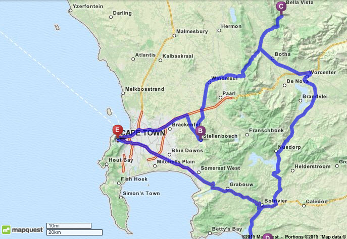

Carrie's Cape Town Adventure
In December, George Lace and I traveled to Cape Town and the surrounding area for the adventure of a lifetime. For both of us, it was our first time to Africa. This page provides trip highlights and is useful whether you're spending a quarter abroad there or just looking for your next big adventure! Enjoy :)
Our Route
Cape Town --> Stellenbosch --> Inverdoorn --> Hermanus --> Cape Town

Cape Town
With both a beach and surrounding mountains, Cape Town offers a variety of activities! My top 5 activities are:
- Table Mountain Hike and Repelling
- Robben Island Nelson Mandella Tour
- Boulder Beach Penquin Colony
- Cape Point / Cape of Good Hope
- Kirstenbosch Botanical Gardens
Stellenbosch
Stellenbosch is known for having some of the most beautiful wineries. The great wine is followed by great cuisine, here are my top picks:
- Ernie Els Winery
- La Petite Ferme Winery
- Hussan Grill
- Verde Lust Cafe
Inverdoorn Game Reserve
The Inverdoorn Game Reserve is only 2.5 hours north of wine country and offers a unique opportunity to see four of the "Big 5" animals! Take a night-time and early morning safari drive with a tour guide to see some of Africa's most amazing wildlife.
Hermanus
Located along South Africa's Garden Route, Hermanus is one of South Africa's premiere beach towns. If you're adventurous, it has fantastic whale watching and shark diving opportunities.
- Grotto Beach
- Gansbaii Shark Diving
Information About the Author:
Carrie is a full-time MBA student at Northwestern's Kellogg School of Management. Prior to business school, she worked for Deloitte Consulting specializing in Human Capital engagements. Her interests include scuba diving, cooking, running, and of course, travel!